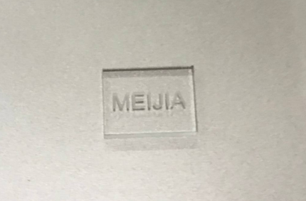

Week 1
On the first lesson, we were introduced to the module and I had a further understanding on the content that the module covers. Mr Chew explained the final project that we are required to complete by the end of the semester. We were taught about Fablab safety and learnt the risk and hazards of the operating equipmetns. In order to use the facilities in Fablab, we completed Fablab quiz and it definitely enhances my understanding on Fablab safety. One key takeaway from the learning is the emergency procedures to follow if any accident occurs which is as shown in the image below. We were also introduced to many softwares that may be helpful throughout our assignments.

Week 2
On the second week, I was really excited to try making my very first website. We were introduced to HTML tutorial. I learnt the codes and tried out myself to produce my own website. I also learnt that CSS helps to edit the display of HTML to make our website more presentable and nicer.

Week 3
We were introduced to Version Control where it is use to manage changes made in the documents, software and websites. Firstly, I cloned and downloaded a repository to my folder then the local folder for git will be initialised. The works will be updated only in the existing repository. git pull will always be the first command before any satrt of work. The image below illustrates how Version Control works.

Week 4
On week 4, we learnt on Computer Aided Design and it is also my very first time using the software, Autodesk Fusion 360. I was very fascinated to use the software and gained knowledge on some of the functions provided. We tried a few examples demonstrated and it helps me better in familiarising the functions in the software.

Week 5
We received the mechanism of the music box. I recorded the measurement of the mechanism and started sketching each piece of wood using Fusion360. Throughout the process, I seek help form the lecturer to clarify my doubts.

Week 6
We were given the task to produce a 3D Knight Chess Model. I looked for images from the internet and imported it into Fusion 360. I discovered a few tools that I have not used before and it was very interesting to learn. I outlined the canvas image and extrude the upper part of the chess piece and used the revolve tools for the bottom part. After completing the drawing, I downloaded the file in Stereolithography format file and imported it into Ultimaker Cura. I made a few adjusments and sliced my model. It was very fulfilling as I have never 3D print a model from an image.

Week 7
On week 7, we work on our music box designs based on the dimensions of the mechanism. We were taught how to draw boxes with the teeth as well as the hinge areas. It has been really challenging initially as I do not have much experience to draw model for laser cutting. It took me awhile to visualise and understand the model.

Week 8
We were divided into groups to go down the lab with laser cutting machines to learn about process of laser cutting. I have learnt about the sequence of how to switch on and off the machine. Besides, I have learnt about some of the important switches that can shut the whole machine down in the case of emergency. We were introduced to the machine and taught how to use the laser cutting machine, we were given the oppurtunity to cut the PPVC.
